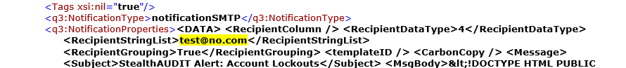

Summary: Using PowerShell get-childitem and Select-String to search through files for a string in job XML files
Issue: You need to find which job XML file contains a certain parameter or setting.
Instructions: : To find specific text (your parameter name, setting info, etc) in the job XML files for StealthAUDIT, use the example commands below on the StealthAUDIT Application server. (In this example, the string being searched for is test@no.com, but adjust to search for your desired criteria). This can be run regardless of which directory you are in. (You do not need to be in the jobs directory.)
gci "$env:sainstalldir\Jobs\*" -include "JOB_*.xml", "job.change", DataAnalysisTasks.XML, DataAnalysisTasks.change, ActionsTasks.XML, Actions.Change -Recurse | select-string -pattern "test@no.com" | select Path, Line | fl *
Further explanation of what this string of commands does
(You can ignore this section if you are already well-versed in PowerShell commands.) This is four different commands, with each of the first three piping (sending) their output to the next command. The pipe character | separates each of the commands.
gci "$env:sainstalldir\Jobs\*" -include "JOB_*.xml", "job.change", DataAnalysisTasks.XML, DataAnalysisTasks.change, ActionsTasks.XML, Actions.Change -Recurse
This portion get the child object of items in the the jobs folder of the SA install directory. The -include portion specifies all the qualifiers for the path already given ("$env:sainstalldir\Jobs\*"), meaning that only portions that have the names given will be included in the output. The -recurse parameter indicates the search should repeat inside subfolders found.
Here is an example of a piece of the output from just this portion of the command:
select-string -pattern "test@no.com"
The portion finds the text you are searching for (in this case "test@no.com") in the prior command's output. It will only display items that contain that text. When it finds that text, it will display information about the path, line number, etc where the text was found.
Here is an example of what the output of this command (run after the prior one) returns:
Note that this is not especially easy to read, hence the next two commands.
Select Path, Line
This portion specifies to only display the Path and Line information from object(s) returned by the prior select-string output. (Select is the alias for the actual command Select-Object.) There is no visible output from this command, you need the next command for that.
fl *
This command is the short/alias version of the Format-List command, which is designed to display information in a table that is easier for humans to read. You can select just individual properties passed to it, or just display them all with the * wildcard character. Here is an example of the output of this command + all the prior commands discussed:
When the final output is reached you have the path to the file(s) where the text we originally searched for was found (in the DataAnalysisTasks.xml file). You also see the line the text was found on, although it is slightly formatted to account for special characters. Here's what the actual (viewed in internet explorer) version of the example file looks like on that line and a few surrounding it:

Product: StealthAUDIT
Module: SA - Core
Versions: 7.0+
Legacy Article ID: 2281